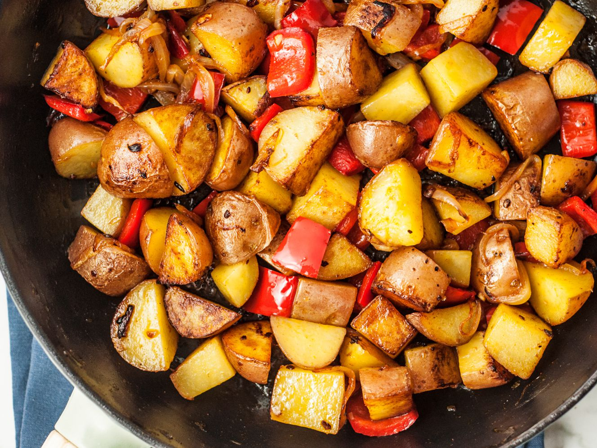

Abbys Breakfast Potatoes

A different take on your normal breakfast potatoe! The combination of the salty coffee seasoning and the sweet honey make this breakfast potatoes stand out against the competition. Goes great with an omlet.
Ingredients
- 3 Russet Potatoes
- 2 Tablespoons of Olive Oil
- Coffee Steak Seasoning
- Honey
Cooking Instructions
- Dice your potatoes
- Cook in microwave on high for about 10 minutes or until soft
- Heat sauce pan over medium heat add oil
- Add your potatoes and cover in steak seasoning
- Cook until golden brown
- Drizzle honey overtop to taste